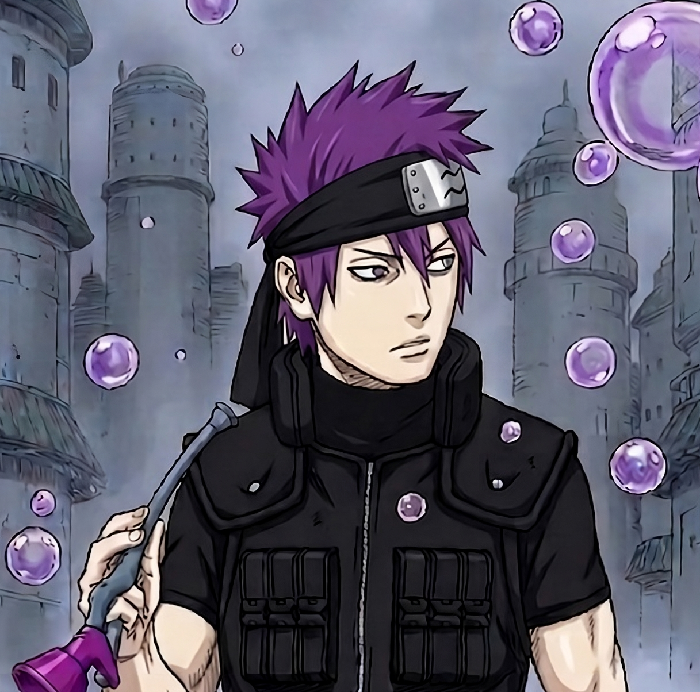

Olá ninjas!
Sou Auriosh.
Embora meu nome seja Igor, sou reconhecido em todo o Nin Online pelo meu codinome. Sou um veterano leal da Vila da Névoa, presente no servidor Hawk desde o seu nascimento.
Minha especialidade reside no caminho do Médico / Água. Sou um Shinobi focado em Chakra, mestre na arte da cura e letal no combate corpo a corpo quando utilizo meu Chakra Scalpel.
Atualmente, ocupo o posto de Doutor na Corporação Médica e exerço a função de moderador no Discord da Névoa. Como líder da Guilda Hoshigaki, dedico meus esforços para acolher, treinar e guiar os novatos que buscam trilhar o caminho ninja.
Afiliação
Mist Village
Maestria
Medicina & Água

Ficha Shinobi
Level 60 | Status de CombateFoco Primário
Chakra Intelligence
Atributos (Base → Final)
STR
5 → 5
AGI
6 → 6
Combat Performance
1210
HP Máximo
800
Chakra Pool
74
Auto-Atk Damage
Chakra Scalpel Active
Loadout & Identity
Arma
Bare Hands (None)
Acessórios
Ring Alpha/Beta (+8 CHK)
Signo
Aries
Guild Buff
+10% Stats
Arsenal Shinobi
Forjando sistemas na névoa para a prosperidade do servidor Hawk.
Status: Desenvolvimento Ativo
Todos os projetos estão sendo forjados e refinados diariamente.
"Meu objetivo final é unificar estas ferramentas em um ecossistema único para a Névoa. Em breve: Guia de Maestrias e Montador de Builds."
Nin Ranking
Sistema avançado de monitoramento competitivo. O algoritmo processa dados brutos de mais de 20 páginas JSON (servidor_page_1 a 21) para consolidar um banco de dados unificado de jogadores, gerando rankings dinâmicos de força e atividade em tempo real.
Gestão Névoa
Solução administrativa corporativa para vilas de elite. Arquitetura modular contendo Dashboard estratégico, monitoramento em tempo real com Firebase Auth, abas de organização interna e sumário de atividades automatizados para o Mizukami e seus líderes.
Calculadora Shinobi
Ferramenta essencial de progressão. Permite prever com exatidão a experiência necessária para o próximo nível e simular a distribuição estratégica de perks e pontos de atributos, otimizando o desempenho final da sua build antes de investir os recursos.
MercadoNin
Tabela de preços intercontinental comparando os servidores NA e BR. Exibe o valor base de mercado e os preços sugeridos para os bancos das vilas, estabelecendo diretrizes claras para operações de compra e venda dentro da economia da Névoa.
História Névoa
Projeto imersivo de preservação cultural e narrativa. Documenta os marcos históricos, guerras entre vilas e a trajetória épica da Névoa no servidor Hawk através de uma interface de capítulos interativos.
Guia de Missões
O diretório definitivo para shinobis da Névoa. Listagem completa de todas as missões disponíveis na vila com detalhes técnicos, requisitos de level e guias em vídeo exclusivos demonstrando o passo a passo para cada conclusão.